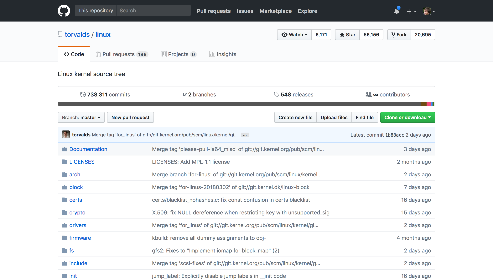
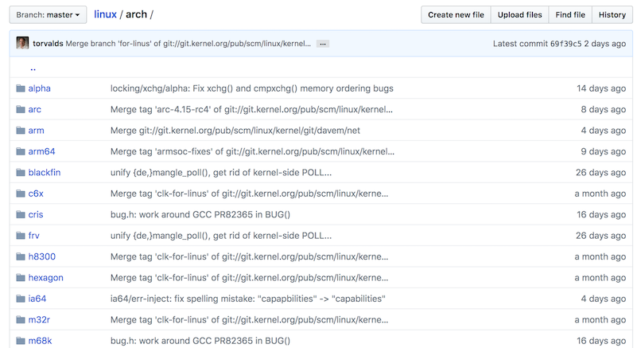

Sistemi Operativi con Raspberry PI 3
A.S. 2017-2018
Istituto di Istruzione Superiore G. Marconi
Tecnologie e Progettazione di Sistemi Informatici
Prof. Claudio Capobianco
Buongiorno ragazzi,
questo materiale riepiloga quanto detto a lezione nelle scorse settimane.
Le risposte alle domande dei compiti in classe sono tutte incluse in questo materiale.
Approfondimenti facoltativi sono in box come questo.
Buon lavoro.
MCU vs CPU
Prima di cominciare, cerchiamo di capire il contesto in cui ci troviamo.
Tutti i computer hanno un sistema operativo?
Short answer: no 🙂
Long answer:
Il sistema operativo gestisce le risorse della macchina (memoria, processore, periferiche) per permettere a più applicazioni di poter funzionare contemporaneamente. Ma ogni cosa ha un suo costo: il sistema operativo, come ben sappiamo, utilizza per sé stesso una porzione a volte considerevole delle riorse stesse del nostro computer: pensiamo a quanti GB sul disco occupa una installazione di Windows o Mac, a quanta memoria occupa, e che ha volte i loro processi impegnano la CPU senza una ragione apparente. Oltre a questo pensiamo a problemi di vulnerabilità, aggiornamento, etc.
Se noi vogliamo far girare un solo programma sul computer, possiamo non aver bisogno di un sistema operativo. Tipicamente quest accade per piccoli elaboratori per compiti molto specifici: questo sistemi vengono chiamati embedded.
Qualche esempio di computer con e senza OS?
In generale, tutti i computer con una interfaccia grafica sono progettati per fare più cose contemporaneamente, ed hanno un sistema operativo: pensiamo ad esempio ai nostri computer desktop, laptop, smartphone. Anche i web server sparsi per il mondo fanno tante cose insieme, ed hanno un sistema operativo.
Le cose diventano un po' più complicate quando parliamo di piccoli computer su una sola scheda, chiamati appunti single-board computer. In classe abbiamo visto diversi tipi di queste schede:

A sinistra c'è una Raspberry PI 3 (con il case), a destra in alto un Intel Galileo, sotto un Arduino. Le prime due hanno un sistema operativo, la terza no.
E' possibile distinguere visivamente se un computer ha un OS?
Di solito sì, perché l'architettura e la disposizione dei componenti sulla scheda è diversa.
Per i computer senza OS, i componenti base di un elaboratore sono su un unico chip, che viene chiamato microcontollore, abbreviato in MCU (Microcontroller Unit): unità di elaborazione (processore), memoria volatile (RAM) e memoria a lungo termine. Nella foto di Arduino, è quel chip rettangolare lungo con tanti piedini su due lati.
Per i computer con OS, i componenti solitamente sono su chip separati. Il chip dedicato all'elaborazione viene chiamato microprocessore, abbreviato in CPU (Central Processing Unit). Come dice il nome, la CPU è specifica per il processamento dei dati ed è "centrale", rispetto agli altri componenti collegati ad esso. Nella Raspberry nella foto, la CPU è quella sotto il foro circolare. La RAM è nella parte inferiore della scheda e la memoria a lungo termine è nella scheda microSD estraibile.
Il sistema operativo è legato al tipo di CPU?
Come per ogni domanda in questo ambito così complesso, la risposta comincia con...dipende!
Il sistema operativo è un programma estremamente complesso, e si può dividere in diverse componenti. Solo quelli più vicini all'hardware dipendono dalla CPU, dal tipo di RAM e da tutti i componenti e le periferiche.
Kernel
Abbiamo visto che il sistema operativo può essere diviso in varie componenti, che possono essere raggruppati in base alla dipendenza dall'hardware su cui girano: a questo fine si usa la metafora delle sfere concentriche, in cui al centro di tutto c'è l'hardware.

Il programma che è più vicino all'hardware viene chiamato kernel. Sulla Raspberry Pi, viene utilizzato un kernel chiamato Linux.
Il kernel Linux è stato creato nel 1991 da Linus Torvalds, ed è distribuito attraverso la licenza di software libero GNU GPLv2, ideata da Richard Stallman per proteggere il software libero (free software, con "free as in speech").
Funzioni principali del kernel
Come abbiamo visto, il kernel si occupa di mediare l'accesso delle applicazioni alle risorse del computer:
- central processing unit (CPU)
- memoria volatile (RAM)
- periferiche di input/output (hard disk, tastiera, mouse, stampanti, etc.)
Questa mediazione dell'accesso avviene attraverso alcune funzionalità chiave:
- lo scheduling, che decide quale processo deve essere eseguito in un determinato istante, in accordo ad alcuni criteri
- la gestione della memoria, per permettere alle applicazioni di avere lo spazio di memoria richiesto, senza che diverse applicazioni interferiscano tra di loro e senza che possano creare danni più o meno voluti.
Il kernel è un programma
Il kernel è un programma come gli altri, non ha niente di "magico". Del kernel Linux possiamo anche vederne il codice sorgente, visto che è software libero e quindi anche aperto.
Il software libero (free software) implica che il codice sia anche aperto (open-source), perché la possibilità di visionare il codice è una delle libertà fondamentali. Non è vero il viceversa: un codice aperto potrebbe non essere libero. Controllare sempre la licenza per sapere quali sono i termini esatti di utilizzo.
Non confondere "free software" con "freeware". Il freeware è semplicemente del software che non paghi direttamente per poterlo usare, ma non implica nessun'altro concetto o filosofia. Il free software è generalmente gratis, ma non sempre.
Possiamo trovare il codice sorgente di Linux sulla piattaforma GitHub, a questo indirizzo: https://github.com/torvalds/linux

Il codice sorgente su git/GitHun viene contenuto in repository.
Navigando all'interno di questo repository ci aspettiamo di trovare varie cose relative ai diversi tipi di hardware in commercio. Ed è effettivamente così: per esempio, se navighiamo nella cartella arch/, possiamo trovare una lista di tutte le varie architetture di CPU in commercio.

Navigando tra i file del kernel vi accorgete che sono tutte istruzioni a basso livello. Per poter usare in maniera comoda queste istruzioni, ci serve un altro strato sopra il kernel, che vedremo nella prossima pagina.
GNU Utils
Per poter usare in maniera le chiamate di sistema che ci mette a disposizione il kernel, ci sono una serie di strumenti che ci facilitano i compito. Per Linux, queste utiità sono state sviluppate dal progetto GNU, e si chiamano GNU coreutils.
Il progetto GNU è stato fondato nel 1983 da Richard Stallman, al MIT di Boston. GNU ha lo scopo in primo luogo di permettere agli sviluppatori di tutto il mondo di poter sviluppare liberamente software, ovvero avendo a disposizione il codice sorgente dei programmi di altre aziende che usano, e senza la necessità di pagare licenze. Le utilità che useremo in questo corso sono solo parte del progetto; un'altra parte fondamentale è la licenza che permette al software di essere usato legalmente, rispettando le libertà fondamentali del free software. Il nome di questa licenza è GPL (General Public Licence), di cui l'ultima versione è la GPLv3

Anche in questo caso possiamo andare a cercare il codice sorgente delle coreutils.

Andando a vedere il codice sorgente nella tab "tree", ed entrando nella cartella src, potete trovare il codice sorgente di tutti i comandi che ci sono familiari e su cui avete fatto la ricerca.
Extra: ricompilare le GNU coreutils
Questo non fa strettamente parte di questa unità didattica, ma ve la lascio in caso qualcuno di voi voglia fare degli esperimenti.
Se volete modificare le GNU coreutils, ad esempio per cambiare il funzionamento di ls o yes, potete farlo seguendo le istruzioni qui sotto.
- accedere al terminale della vostra Raspberry
- abilitare il download dei sorgenti da /etc/apt/sources.list, togliendo il commento all'ultima riga
- creare ed entrare in una cartella separata
mkdir coreutils-src
cd coreutils-src
- scaricare i sorgenti e scompattarli
apt-get source coreutils
tar xvf coreutils_*.orig.tar.xz
- entrare dentro la cartella
src, all'interno possiamo vedere i sorgenti dei vari comandi.
cd src
Modificare un comando
Possiamo provare a modificare il comando yes, che è uno dei più semplici. Modificare l'eseguibile in modo che invece di yes, stampi quello che volete.
- modificare il file
yes.c - tornare alla root del progetto e ricompilare
cd ..
./configure.sh
make
Ora nella cartella src avete tutti gli eseguibili! Provate a lanciare yes e vedete se stampa quello che desiderate.
cd src
./yes
Scheduler
Uno dei compiti principali del sistema operativo, ed in particolare del kernel, è quello di decidere quando una determinata applicazione può usare il processore. Questo meccanismo viene chiamato scheduling.
L'unità fondamentale su cui lavora lo scheduling per gestire il processore viene chiamato, senza sorprese, processo.
Processi
Noi scriviamo del codice sorgente sul nostro editor di testo e lo salviamo in un file. Questo file viene chiamato programma. Il programma, per poter essere eseguito, deve essere compilato e caricato in memoria. Una volta che queste operazioni sono state fatte, il programma diventa a tutti gli effetti un processo. Possiamo quindi dire che i processi sono programmi in esecuzione. Un programma può essere eseguito più volte ed avere quindi più processi in esecuzione: pensiamo ad esempio a diverse finestre di un browser.
Ciclo di vita dei processi
Quando il programma viene eseguito, nasce un processo e questi ha un suo ciclo di vita che viene gestito dallo scheduler. Il ciclo di vita è rappresentato da diversi stati.

Al processo appena creato lo scheduler assegna lo stato NEW, durante il quale il programma alloca tutte le risorse di cui necessita (es. memoria). Quando ha finito, lo scheduler gli assegna lo stato READY: i processi contrassegnati con questo stato sono pronti ed in "fila" per essere eseguiti sul processore. Quando questo accade lo stato cambia in EXECUTE.
Nello stato EXECUTE possono succedere diverse cose:
- il processo richiede una risorsa che non è disponibile, in questo caso lo scheduler gli assegna lo stato
SLEEP(akawaiting) - lo scheduler decide di assegnare il processore ad un altro processo, e riporta il processo corrente in
READY - il processo finisce le cose che doveva fare o viene "ucciso" (killed) dall'esterno, lo scheduler gli assegna lo stateo
TERMINATEDnel quale libera le risorse che ha allocato nel suo ciclo di vita - il processo viene "fermato" (stopped) dall'esterno, ed entra nello stato di
STOP; lo stato diSTOPè simile aSLEEPma lo stop viene comandato dall'esterno.
Libro, studiare: pag. 238, stato dei processi.
Nella realtà, il kernel Linux prevede molti altri stati, che considerano se il processo sta eseguendo delle operazioni da amministratore o utente, o se il processo è nella memoria RAM o nella memoria di swap. A volte uno processo che ha finito tutte le operazioni può diventare ZOMBIE se ha ancora qualche legame con il mondo che non lo fanno morire serenamente. Il meccanismo base è comunque quello descritto sopra e ci concentreremo quindi su quello.
Scriviamo il nostro programma
Per verificare quanto appena detto, scriviamo un semplice programma in C, che salveremo in un file chiamato hello.c.
Vogliamo che questo programma stampi su schermo una stringa una volta al secondo, finché non viene esplicitamente fermato dall'utente.
# include <stdio.h>; // libreria che contiene la funzione printf
# include <unistd.h> // libreria che contiene la funzione usleep
// la funzione main è l'entry point del programma, da dove comincerà l'esecuzione
int main {
// questa forma del for equivale ad un ciclo infinito
for (;;) {
// stampa una stringa nello standard output, generalmente la console da cui viene lanciato il programma
printf(“HELLO”);
// aspetta per un certo numero di microsecondi
usleep(1000000); // 1e6 microsecondi = 1 secondo
}
// il return fa uscire dalla funzione corrente, ma trovandoci nel main fa uscire dal programma.
return 0;
}
La funzione int main richiede di ritornare un valore intero. Per convenzione dei programmi C, si ritorna 0 se non ci sono stati errori, un valore negativo altrimenti.
Compilazione
Prima di poterlo eseguire, dobbiamo compilare il programma, ovvero trasformarlo da un file leggibile dagli esseri umani, ad un file leggibile dalla macchina. Nei sistemi GNU Linux, questo compito è svolto dal programma gcc.
GCC è l'acronimo di GNU Compiler Collection (originariamente GNU C Compiler), e contiene tutti gli strumenti per compilare programmi scritti in moltissimi linguaggi diversi. Come dice il nome, gcc è stato sviluppato da GNU ed è quindi software libero (qui potete trovare il codice sorgente).
La compilazione di un programma C prevede due fasi:
- trasformazione di un file di testo
.cin un oggetto.o - collegamento (linking) dell'oggetto con tutti gli altri oggetti delle librerie di cui ha bisogno
Entrambe queste operazioni possono essere svolte con il seguente comando.
gcc hello.c -o hello
Questo comando ha creato l'eseguibile hello. Ora eseguiamolo.
./hello

Bene! Ricapitolando, abbiamo scritto un programma, l'abbiamo compilato, eseguito ed è diventato un processo. Ma come facciamo a fermarlo??
Fortunatamente, da terminale possiamo inviare segnali al processo, usando degli shortcut da tastiera. Con ctrl-c, inviamo il segnale di kill al processo, e lo scheduler lo muove nello stato di TERMINATED e successivamente lo elmina dalla memoria. Proviamo.

OK ma... così non posso esaminare il mio sistema quando il processo è in esecuzione. Fortunatamente, esiste un altro segnale che serve proprio a questo: ctrl-z invia un segnale al processo per sospenderlo, e lo scheduler gli assegna lo stato di STOP.

Come vediamo dalla stampa su schermo, il processo è ancora in vita ed è stato fermato (STOPPED).
Per vedere in che stato si trovano i processi in questo momento, possiamo usare il comando ps con il parametro a
ps a

Il nostro processo è in stato T. A cosa corrisponde? Consultiamo il manuale
di ps con il comando:
man ps
Scorrendo, vediamo ad un certo punto la lista degli stati e che T corrisponde a stopped, come ci aspettavamo.
Ora facciamo riprendere l'esecuzione al processo, con il comando:
bg
Il comando bg è l'abbreviazione di "background" e permette di far continuare l'esecuzione ad un processo, e contemporaneamente avere il controllo della shell. Se infatti provate ora ad eseguire un qualsiasi comando, la shell vi risponderà. Il problema è che l'output della shell viene continuamente interrotto dalle stampe, il che è molto fastidioso. Come fare?
Prima di tutto terminiamo il processo ./hello. Per fare questo, dobbiamo riportarlo in foreground con il comando:
fg
che è l'abbreviazione di "foreground". A questo punto possiamo terminarlo normalmente con ctrl-c.
Ora possiamo re-indirizzare l'output del nostro processo in un luogo diverso dalla console. Infatti, quando usiamo la printf nel nostro programma C, stiamo dicendo implicitamente di usare lo standard output (abbreviato stdout), che di default è il terminale da cui abbiamo lanciato l'eseguibile.
printf --> stdout --> terminale
Questo comportamento può essere sovrascritto nel momento in cui si lancia l'eseguibile, con il carattere maggiore >. Si può reindirizzare l'output in un qualsiasi file, e questo in generale è utile ad esempio per fare dei log di sistema. Nel nostro caso, non siamo interessati a salvare in maniera persistente l'output del nostro programma, e ci viene in aiuto un file speciale dei sistemi Linux che si comporta da "buco nero", un pozzo senza fondo in cui possiamo metterci dentro qualsiasi cosa, l'output verrà semplicemente scartato. Questo file speciale è /dev/null. Lanciando il comando così modificato:
./hello > /dev/null
abbiamo che l'output ora non è più visibile sul nostro terminale. Riprendiamo il controllo della shell con ctrl-z, mettiamo il processo in background con bg e voilà! abbiamo il nostro processo in esecuzione e il controllo della shell.
Controlliamo che il processo sia effettivamente lì, e vediamo in che stato si trova.
ps a

Ci sono diversi motivi. Il primo è che durante la usleep il processo è in stato di sleep (ovviamente). Considerando che la stampa dell'output richiede pochi millisecondi, è effettivamente molto probabilmente che quando lanciamo ps troviamo il nostro processo dormiente.
Se togliessimo la usleep? Il risultato dipenderebbe dal numero di core che ha il processore: su ogni core può esserci un processo in esecuzione. Ma se avessimo un solo core, succederebbe che tutto il nostro sistema sarebbe estremamente rallentato, perché quasi sempre ci sarebbe
./helloin esecuzione.
Come fa lo scheduler a decidere quale processo in ogni momento deve essere eseguito sul processore? Utilizza dei criteri, che costituiscono poi la parte più importante dello scheduler stesso.
Criteri di scheduling
Libro: studiare pag.241, "Criteri di scheduling"
Immaginate di avere un'attività commerciale con una sola cassa e tantissimi utenti in coda da gestire. In qualità di gestori, dovete dare chiare istruzioni all'operatore o operatrice alla cassa su come gestire i clienti.
Gli sviluppatori che programmano lo scheduler si trovano in una situazione molto simile. Inizialmente le cose sono facili: si potrebbe dire che si devono servire i clienti/processi uno alla volta in base all'ordine di arrivo, e li servo finché non hanno finito le loro richieste. Questo sistema si chiama First-Come-First-Served ed è molto simile ad una coda FIFO (First-In-First-Out). Scrivere uno scheduler così è molto semplice, ma porta presto a ovvi problemi: se un processo ha tante cose da fare blocca il sistema.
Un'alternativa è quello di servire prima quelli che richiederanno meno tempo ad essere eseguiti. Questo approccio si chiama Shortest Job First. Anche questo è semplice ma porta all'eccesso opposto del precedente: è probabile che processi che richiedano tanto tempo di esecuzione non vengano mai completati.
Ora pensate ad un pronto soccorso. Immaginate che arrivi qualcuno in fin di vita che richieda un operazione importante, e davanti a lui ci sono molte persone con dei problemi lievi. Cosa fareste? Ovviamente dareste priorità al ferito grave. Ed è questo effettivamente un altro concetto chiave che si può aggiungere allo scheduler: la priorità. Alcuni processi è bene eseguirli prima di altri. In generale, i processi relativi all'interazione utente (es. interfaccia grafica) hanno alta priorità, perché in questi casi anche un ritardo di pochi millisecondi può essere molto fastidioso e portare all'inutilizzabilità di tutto il sistema.
Nella realtà, si usa una combinazione di tutte le soluzioni sopra, e non ce n'è una adatta a tutte le situazioni. Come scegliere, allora?
Come sempre, le scelte vanno prese in base a dei valori (aka principi o obiettivi), e basati su dei parametri misurabili.
No valori --> No scelte sensate
No misure --> No sonni tranquilli
I valori che potete porre alla base delle vostre scelte possono essere, ad esempio:
- equità
- bilanciamento
- controllo
Studiare pag. 242 del libro relativamente a questi concetti
Round Robin
Un caso semplice ma efficace di scheduling si chiama Round Robin ed è molto utilizzato nei casi in cui la semplicità ed il determinismo sono particolarmente importanti, come ad esempio nei sistemi Safety Critical, ovvero per sistemi in cui un malfunzionamento può portare a danni alle persone (safety).
Per approfondire, vedi pag. 246 del libro.
Are you pre-emptive?
Come ultima cosa, è importante comprendere bene il concetto di pre-emptive.
Immaginate di essere l'operatore o operatrice al bancone di una pizzeria al taglio. Mentre state servendo un cliente, entra il sindaco della vostra città ed ha evidentemente molta fretta di essere servito. In accordo con i criteri che vi sono stati dati, assegnate un'alta priorità al sindaco, ma cosa fate con il cliente attuale?
Avete due possibilità:
- non pre-emptive: finite di servire il cliente attuale, e poi servite il sindaco
- pre-emptive: servite immediatamente il sindaco, mettendo da parte il cliente attuale
Quale scegliere? Ovviamente dipende dal vostro contesto d'uso e dai vostri valori e obiettivi. Non c'è una soluzione migliore in assoluto, ed ogni scelta ha dei vantaggi e degli svantaggi.
Gestione della memoria
Come abbiamo detto, un elaboratore elettronico è composto fondamentalmente da due entità: un unità di processamento, e delle informazioni da processare. Queste informazioni si trovano in un elemento chiamato memoria. È chiaro quindi perché la gestione della memoria è un aspetto fondamentale di un sistema operativo.
La memoria serve principalmente a due scopi:
- ospitare il binario del processo, con le istruzione per il processore
- ospitare i dati che vengono manipolati dal processo durante la sua esecuzione
Caricare un processo in memoria
La memoria su cui opera il processore è detta memoria centrale, che corrisponde quasi sempre la memoria RAM. La memoria centrale può essere vista come un lunghissimo array di byte, a cui si può accedere liberamente semplicemente sapendo la sua posizione nell'array.
Altri tipi di memoria, come per esempio l'hard-disk, non possono essere visti come una semplice sequenza di byte a cui accedere.
Per esempio, immaginiamo una piccola memoria centrale di 96 bytes. Per accedere al primo byte, leggo l'indirizzo di memoria 0x00 (gli indirizzi di memoria si esprimono sempre in esadecimali, per comodità, e partono da zero). Per accedere all'ultimo byte, leggo l'indirizzo di memoria 0x5F (che equivale a 95, ricordiamoci che siamo partiti da zero!).

Quando lanciamo un eseguibile, stiamo chiedendo al sistema operativo di copiare il file binario del nostro processo dalla memoria persistente, chiamata anche memoria secondaria, alla memoria centrale. Nel caso della Raspberry, la memoria secondaria è la scheda SD.
memoria secondaria (SDCard) -- ./memory --> memoria centrale (RAM)
La domanda è: quale indirizzo di memoria ci assegna il kernel?
Allocazione della memoria centrale
Dove il nostro eseguibile verrà caricato in memoria, dipende da tante cose e ci possono essere varie strategie di assegnazione. L'assegnazione della memoria viene detta in termini tecnici allocazione.
La soluzione più semplice è che il kernel ci assegni la prima zona di memoria disponibile che sia abbastanza grande da contenere il processo. Questa è una soluzione molto usata, e viene detta first-fit. Questa è anche stata la vostra scelta durante la simulazione alla lavagna con i post-it.
Un'altra soluzione potrebbe essere cercare in memoria uno spazio delle dimensioni più simili al processo che devo caricare, in modo da ridurre la frammentazione: in questo caso si parla di best-fit.
Per approfondimenti sulle strategie di allocazione e sulla frammentazione, andate a pag. 258 del vostro libro.
In qualche modo comunque, il kernel assegna una zona di memoria al processo, ed il processore può cominciare a leggerne il contenuto. Ricordiamo che il processore può leggere solo dalla memoria centrale; non può leggere direttamente dall'hard-disk.
Adesso analizziamo in dettaglio da cosa è composto questo eseguibile.
Analisi di un oggetto
Immaginiamo di avere il seguente programma, nel file memory.c:
int main(void) {
int a = 1;
int b = 2;
int c = a+b;
return c;
}
Pur nella sua semplicità, è un programma abbastanza completo: c'è una funzione, ci sono delle assegnazioni e un'operazione matematica. Come estrema semplificazione, è tutto quello che deve fare un processore.
Compiliamo sulla Raspberry il nostro programma con il nostro amico ❤️gcc❤️, aggiungendo alcune opzioni che ci torneranno utili:
-g: aggiunge i simboli di debug all'eseguibile: verrà di dimensioni più grandi, ma è fondamentale in fase di sviluppo-O0: disabilita le ottimizzazioni, in modo che ogni operazione del codice sorgente corrisponda ad una operazione nel codice binario-c: crea l'oggetto senza la fase di link con le librerie esterne, in modo che il file binario generto corrisponde esattamente al nostro programma, senza nient'altro
Il comando completo è quindi così:
gcc -g -O0 -c memory.c
Eseguendo ❤️gcc❤️ con queste opzioni, viene generato il file memory.o. L'estensione .o significa che il file è un oggetto, ovvero solo un pezzo di applicazione, e non una applicazione completa. Vediamo come è fatto questo oggetto.
Nano
Per prima cosa proviamo ad aprirlo con nano:

Mh... niente di particolarmente interessante. Il problema è che nano prova ad aprire il file come documento di testo ASCII, ma il che stiamo esaminando è un binario. Quindi la maggior parte dei byte è illegibile!
Quando vi capita un caso come questo, la prima cosa da fare è cercare di capire che tipo di file stiamo analizzando. Per questa operazione molto comune esiste un comando dedicato di Linux, che si chiama appunto file:
$ file memory.o
memory.o: ELF 32-bit LSB relocatable, ARM, EABI5 version 1 (SYSV), not stripped
Dall'output del comando, vediamo che memory.o è un file oggetto compilato per ARM a 32 bit. Bene. Allora lo possiamo analizzare con uno strumento che si chiama objdump.
Per analizzare un qualsiasi file (non solo gli oggetti), esiste un altro comando molto simile, che si chiama
hexdump. Se volete provare ad analizzare un qualsiasi file, provate ad eseguire il comandohexdump -C <nomefile>per vedere il contenuto in esadecimale.
Objdump
Objdump è un comando estremamente versatile per analizzare oggetti ed eseguibili. Ha tantissime opzioni per analizzare nel dettaglio ogni aspetto del file. Noi utilizzeremo le seguenti:
-s: visualizza il contenuto di ogni sezione (le sezioni le vedremo tra poco)--source: visualizza anche il codice sorgente, se disponibile (nel nostro caso è disponibile perché abbiamo compilato con l'opzione di debug)
Vediamo l'output:
$ objdump -s --source memory.o
memory.o: file format elf32-littlearm
Contents of section .text:
0000 04b02de5 00b08de2 14d04de2 0130a0e3 ..-.......M..0..
0010 08300be5 0230a0e3 0c300be5 08201be5 .0...0...0... ..
0020 0c301be5 033082e0 10300be5 10301be5 .0...0...0...0..
0030 0300a0e1 00d08be2 04b09de4 1eff2fe1 ............../.
... altre sezioni ...
Disassembly of section .text:
00000000 <main>:
int main(void) {
0: e52db004 push {fp} ; (str fp, [sp, #-4]!)
4: e28db000 add fp, sp, #0
8: e24dd014 sub sp, sp, #20
int a = 1;
c: e3a03001 mov r3, #1
10: e50b3008 str r3, [fp, #-8]
int b = 2;
14: e3a03002 mov r3, #2
18: e50b300c str r3, [fp, #-12]
int c = a+b;
1c: e51b2008 ldr r2, [fp, #-8]
20: e51b300c ldr r3, [fp, #-12]
24: e0823003 add r3, r2, r3
28: e50b3010 str r3, [fp, #-16]
return c;
2c: e51b3010 ldr r3, [fp, #-16]
}
30: e1a00003 mov r0, r3
34: e28bd000 add sp, fp, #0
38: e49db004 pop {fp} ; (ldr fp, [sp], #4)
3c: e12fff1e bx lr
Una parte del file è stata tagliata per motivi di spazio. Potete visualizzare il file completo qui.
Analizziamo riga per riga l'output.
memory.o: file format elf32-littlearm
In questa prima riga, vediamo un output molto simile a quello di file, che ci dice che tipo di file stiamo analizzando.
Contents of section .text:
0000 04b02de5 00b08de2 14d04de2 0130a0e3 ..-.......M..0..
0010 08300be5 0230a0e3 0c300be5 08201be5 .0...0...0... ..
0020 0c301be5 033082e0 10300be5 10301be5 .0...0...0...0..
0030 0300a0e1 00d08be2 04b09de4 1eff2fe1 ............../.
... altre sezioni ...
Viene visualizzato il contenuto del binario, byte per byte, diviso per sezioni. Cos'è una sezione?
Per comodità, le varie parti di un oggetto vengono divise in sezioni, ognuna contenente una parte specifica dell'oggetto. Una sezione fondamentale è la sezione .text, detta anche sezione del codice, perché contiene le istruzioni per il processore. È in pratica dove si trova il nostro codice compilato.
Altre sezioni sono ad esempio
.data, che contiene dati statici,.debug_info, che contiene le informazioni di debug.
Analizziamo le varie colonne:
- la prima colonna è l'offset dei byte di questa riga rispetto all'inizio del file
- le quattro colonne successive sono i valori dei byte della sezione
- l'ultima colonna è un tentativo di interpretare i byte in ASCII: è utile perché spesso all'interno dei file binari sono contenute delle stringhe, ed in questo modo possiamo leggerle facilmente.
Disassembly of section .text:
Qui comincia il disassemblato della sezione .text. Con il termine disassemblato intendiamo le istruzioni in assembly corrispondenti al nostro scritto in C.
00000000 <main>:
Ci dice che stiamo per analizzare la funzione main.
int main(void) {
0: e52db004 push {fp} ; (str fp, [sp, #-4]!)
4: e28db000 add fp, sp, #0
8: e24dd014 sub sp, sp, #20
Qui entriamo nel vivo. La riga che abbiamo scritto in C int main(void) viene tradotta nei comandi assembly (cioè per il processore) delle righe successive. Ogni riga è divisa in tre parti; analizziamo la prima riga:
0:come prima, la posizione (offset) del primo byte rispetto all'inizio del file; in questo caso è 0 perché è il primo byte in assolutoe52db004: il valore dei bytepush {fp} ; (str fp, [sp, #-4]!): la corrispondenza con il mnemonico di assembly
OK, ricapitoliamo. Stiamo vedendo in maniera esatta e puntuale cosa succede quando compiliamo un programma. Vediamo che ❤️gcc❤️ converte un file ASCII (memory.c, che abbiamo scritto noi) in un file binario (memory.o, leggibile dal processore).
Possiamo notare che i processori, al giorno d'oggi, ragionano in maniera molto differente da noi. Per quanto ora si parli moltissimo di AI, le differenze nel modo di percepire il mondo tra esseri umani e macchine rimangono ancora abissali.
Analisi dinamica del processo
A questo punto, abbiamo una idea di come è composto un oggetto. Per renderlo eseguibile, dobbiamo far eseguire al compilatore ❤️gcc❤️ anche la fase di linking, con il comando che abbiamo visto nelle lezioni precedenti. Dopo averlo compilato, eseguiamolo.
$ gcc memory.c -o memory
$ ./memory
$
Mh...è successo qualcosa? Il nostro eseguibile sembra non aver fatto nulla: in effetti non c'è nessuna stampa al suo interno. Ma qualcosa dovrebbe aver fatto: dovrebbe aver restituito il valore 3. Come facciamo a verificare?
Esiste un comando che serve proprio per visualizzare il valore di ritorno dell'ultimo comando eseguito.
$ echo $?
3
Perfetto, quello che volevamo! Ricordatevi che il comando echo $? ritorna il valore di ritorno dell'ultimo comando, quindi deve essere eseguito subito dopo ./memory.
A questo punto ci piacerebbe vedere che indirizzi hanno le varie sezioni del nostro eseguibile. Per farlo, il modo più semplice è inserire delle stampe di debug (printf) all'interno del nostro codice:
#include <stdio.h>
int main(void) {
int a = 1;
int b = 2;
int c = a+b;
printf("posizione in memoria di a: 0x%08x\n",(int)&a);
return c;
}
Alcune note:
0x%08x: stampa il valore che segue in esadecimale, con padding a 8 caratteri(int)&a: stampa l'indirizzo di memoria di una variabile invece del valore
Compiliamo ed eseguiamo:
$ gcc memory.c -o memory
$ ./memory
posizione in memoria di a: 0x7e8591ec
Ora sappiamo dove la nostra variabile a è stata allocata in memoria! 🎉🎉🎉
Ma cosa signifia esattamente questo valore? Corrisponde ad un indirizzo in valore assoluto della nostra memoria centrale, ovvero della nostra RAM? La risposta è no.
Memoria virtuale e memoria fisica
Quella che vediamo qui è un indirizzo riferito ad una memoria virtuale. Tra la memoria virtuale e quella fisica c'è una mappatura, che associa ad ogni indirizzo della memoria virtuale un indirizzo della memoria fisica.
Perché questa mappatura? Ci sono molte e valide ragioni. Una di queste è ridurre la frammentazione della memoria centrale, in modo che la RAM sia sfruttata nel modo più efficiente possibile. Un'altra ragione è poter caricare in memoria solo alcune parti dell'eseguibile, quelle che stiamo usando, e lasciare le altre sull'hard-disk. Tutto questo senza disturbare lo sviluppatore, che all'interno del suo processo vede sempre gli stessi indirizzi di memoria.
Per design del kernel, dall'interno del nostro applicativo non abbiamo nessun modo di sapere a quale indirizzo fisico corrisponde un certo indirizzo reale. In effetti, questa informazione non ha alcuna utilità per uno sviluppatore, e potrebbe essere utilizzata in maniera pericolosa da un malintenzionato.
Per approfondimenti, consultate le pagine da 259 in poi del vostro libro
Address space layout randomization
Che succede se proviamo ad eseguire nuovamente l'applicazione? Proviamo:
$ ./memory
posizione in memoria di a: 0x7e9391ec
La posizione in memoria è leggermente cambiata... perché? Questo piccolo cambiamento è dovuto a motivi di sicurezza: per evitare attacchi informatici, viene aggiunto un offset casuale ai dati in memoria. Questo meccaniscmo è chiamato address space layout randomization (ASLR) ed è stata introdotta nel kernel Linux a partire dal 2001.
È possibile disabilitare temporaneamente l'ASLR con il comando:
setarch `uname -m` -R ./memory
Stack
Proviamo ora a modificare memory.c in modo da stampare anche l'indirizzo di b:
#include <stdio.h>
int main(void) {
int a = 1;
int b = 2;
int c = a+b;
printf("posizione in memoria di a: 0x%08x\n",(int)&a);
printf("posizione in memoria di b: 0x%08x\n",(int)&b);
return c;
}
Compiliamo ed eseguiamo:
$ gcc memory.c -o memory
$ ./memory
posizione in memoria di a: 0x7ef7c1f0
posizione in memoria di b: 0x7ef7c1ec
Vediamo che gli indirizzi di memoria di a e b sono molto vicini tra di loro, per l'esattezza differiscono esattamente di 4 bytes. In effetti, le due variabili sono dichiarate come int, ed un int occupa esattamente 4 byte...🤔 coincidenza? No! Quando in un programma allochiamo delle variabili in sequenza come in questo caso, gli indirizzi differiranno esattamente delle dimensioni delle variabili allocate.
Ma guardiamo meglio i valori: b che è stata allocata dopo, ha un indirizzo di memoria precedente di a! 😲
Indaghiamo ancora. Facciamoci stampare l'indirizzo di memoria della funzione main, vediamo che succede. Aggiungiamo la seguente stampa in memory.c:
printf("posizione in memoria di main: 0x%08x\n",(int)&main);
Compiliamo ed eseguiamo:
$ ./memory
posizione in memoria di a: 0x7e4af1f0
posizione in memoria di b: 0x7e4af1ec
posizione in memoria di main: 0x00010440
Mh... la zona di memoria è completamente diversa, mooolto più bassa rispetto alle altre. Che sta succedendo?
L'indirizzo di memoria di main punta alle istruzioni in assembly per il processore, quelle che si trovano nella sezione .text che abbiamo analizzato con objdump. Nel momento in cui lanciamo l'eseguibile c'è solo questa sezione.
Le variabili a e b vengono allocate durante l'esecuzione del processo.
La sezione di memoria dove vengono create queste variabili viene detta .stack, che si può tradurre in "catasta". Questo nome deriva dal fatto che le variabili (e le funzioni) si "accatastano" una sopra l'altra, e si possono togliere solo dall'alto: in altre parole, non si può togliere (cioè eliminare/liberare/deallocare) una variabile nel mezzo della stack. In termini tecnici, viene chiamata una memoria FILO (First-In-Last-Out).

Immagine presa dal gioco 'Stack' di Ketchapp. Tutti i diritti riservati.
Il linguaggio C, o meglio il compilatore ❤️gcc❤️, definisce degli indirizzi virtuali convenzionali per l'inizio e la fine dello spazio di memoria di un processo, e anche per ogni singola sezione. Possiamo vedere questi valori dalle stampe qui sopra del nostro applicativo.
- la variabile
a, che è la prima ad essere allocata ed ha quindi il valore più alto, ha un indirizzo intorno a0x7e000000. - l'indirizzo di
mainè intorno a0x00010440.
La sezione .stack parte dall'indirizzo più alto e cresce verso il basso. La sezione .text parte da un indirizzo più in basso ed ha una dimensione fissa, perché è stata definita nel momento della compilazione
Per esattezza, i valori definiti da ❤️gcc❤️ sono i seguenti:
.text: parte da0x00010000stack: parte da0x7ffffff(e cresce verso il basso)

Cosa succede se la
.stackaumenta fino a raggiungere la sezione.text? Nella maggior parte dei casi, il processo crasha con un errore di segmentation fault. Questo è uno dei problemi più classici e imprevedibili della programmazione, tanto che ha dato il nome al più grande e noto sito di programmatori del web: stackoverflow.

Esiste un'altra sezione di memoria, chiamata
.heap(o memoria dinamica): è una zona di memoria dove si possono allocare e liberare variabili in maniera programmatica. Uno dei problemi più frequenti con la.heapè che qualche variabile può rimanere in memoria anche quando non viene più usata, occupando spazio inutile; questo problema è noto comememory leak.
$ cat objdump.txt
memory.o: file format elf32-littlearm
Contents of section .text:
0000 04b02de5 00b08de2 14d04de2 0130a0e3 ..-.......M..0..
0010 08300be5 0230a0e3 0c300be5 08201be5 .0...0...0... ..
0020 0c301be5 033082e0 10300be5 10301be5 .0...0...0...0..
0030 0300a0e1 00d08be2 04b09de4 1eff2fe1 ............../.
Contents of section .debug_info:
0000 67000000 04000000 00000401 14000000 g...............
0010 0c6c0000 00000000 00000000 00400000 .l...........@..
0020 00000000 00020f00 00000101 63000000 ............c...
0030 00000000 40000000 019c6300 00000361 ....@.....c....a
0040 00010263 00000002 91740362 00010363 ...c.....t.b...c
0050 00000002 91700363 00010463 00000002 .....p.c...c....
0060 916c0004 0405696e 740000 .l....int..
Contents of section .debug_abbrev:
0000 01110125 0e130b03 0e1b0e11 01120610 ...%............
0010 17000002 2e013f19 030e3a0b 3b0b2719 ......?...:.;.'.
0020 49131101 12064018 97421901 13000003 I.....@..B......
0030 34000308 3a0b3b0b 49130218 00000424 4...:.;.I......$
0040 000b0b3e 0b030800 0000 ...>......
Contents of section .debug_aranges:
0000 1c000000 02000000 00000400 00000000 ................
0010 00000000 40000000 00000000 00000000 ....@...........
Contents of section .debug_line:
0000 37000000 02001f00 00000201 fb0e0d00 7...............
0010 01010101 00000001 00000100 6d656d6f ............memo
0020 72792e63 00000000 00000502 00000000 ry.c............
0030 01674b4b 842f0208 000101 .gKK./.....
Contents of section .debug_str:
0000 2f686f6d 652f7069 2f334269 6e66006d /home/pi/3Binf.m
0010 61696e00 474e5520 43313120 362e332e ain.GNU C11 6.3.
0020 30203230 31373035 3136202d 6d617263 0 20170516 -marc
0030 683d6172 6d763620 2d6d666c 6f61742d h=armv6 -mfloat-
0040 6162693d 68617264 202d6d66 70753d76 abi=hard -mfpu=v
0050 6670202d 6d746c73 2d646961 6c656374 fp -mtls-dialect
0060 3d676e75 202d6720 2d4f3000 6d656d6f =gnu -g -O0.memo
0070 72792e63 00 ry.c.
Contents of section .comment:
0000 00474343 3a202852 61737062 69616e20 .GCC: (Raspbian
0010 362e332e 302d3138 2b727069 312b6465 6.3.0-18+rpi1+de
0020 62397531 2920362e 332e3020 32303137 b9u1) 6.3.0 2017
0030 30353136 00 0516.
Contents of section .debug_frame:
0000 0c000000 ffffffff 0100027c 0e0c0d00 ...........|....
0010 1c000000 00000000 00000000 40000000 ............@...
0020 420e048b 01420d0b 580d0d42 cb0e0000 B....B..X..B....
Contents of section .ARM.attributes:
0000 412e0000 00616561 62690001 24000000 A....aeabi..$...
0010 05360006 06080109 010a0212 04140115 .6..............
0020 01170318 0119011a 021c011e 062201 .............".
Disassembly of section .text:
00000000 <main>:
#include <stdio.h>
0: e52db004 push {fp} ; (str fp, [sp, #-4]!)
4: e28db000 add fp, sp, #0
8: e24dd014 sub sp, sp, #20
int main(void) {
c: e3a03001 mov r3, #1
10: e50b3008 str r3, [fp, #-8]
int a = 1;
14: e3a03002 mov r3, #2
18: e50b300c str r3, [fp, #-12]
int b = 2;
1c: e51b2008 ldr r2, [fp, #-8]
20: e51b300c ldr r3, [fp, #-12]
24: e0823003 add r3, r2, r3
28: e50b3010 str r3, [fp, #-16]
int c = a+b;
printf("posizione in memoria di a: 0x%08llx\n",(long int)&a);
2c: e51b3010 ldr r3, [fp, #-16]
printf("posizione in memoria di b: 0x%08llx\n",(long int)&b);
30: e1a00003 mov r0, r3
34: e28bd000 add sp, fp, #0
38: e49db004 pop {fp} ; (ldr fp, [sp], #4)
3c: e12fff1e bx lr